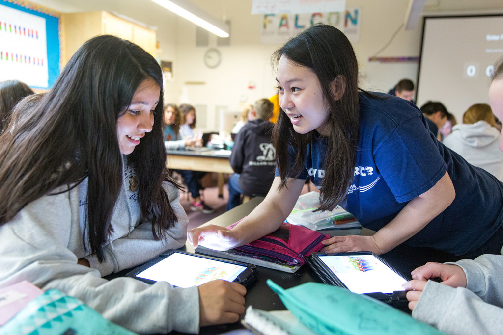
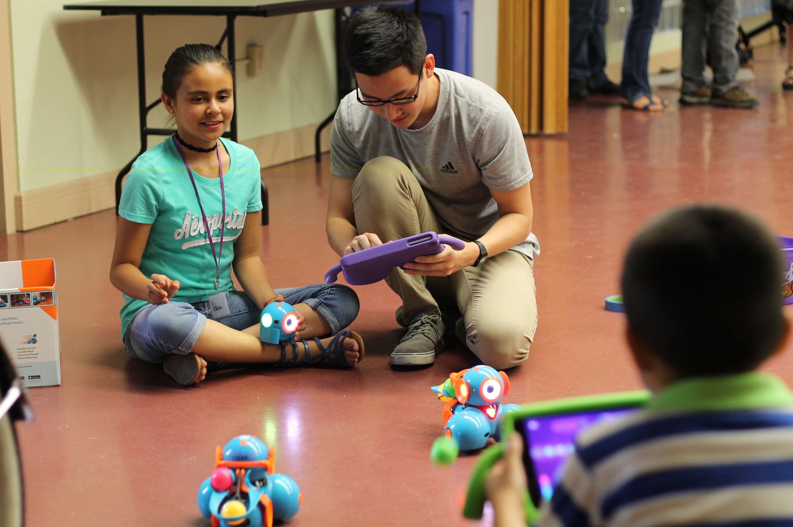

- 
- 

Computer Science for Kids (CS4K) is a student-run community service organization that provides UC Davis students the opportunity to apply their computer science knowledge and experience in the classrooms.
In CS4K, UC Davis volunteers are passionate about computer science and teaching. Our volunteers visit different schools in the Davis and Woodland communities, where they introduce the fundamentals of computer science to elementary and middle school students through programming tools, such as Scratch MIT, Swift Playgrounds, and more.
CS4K strives to give every child an opportunity to learn computer science and to spark their interest in the field as a possible career path.